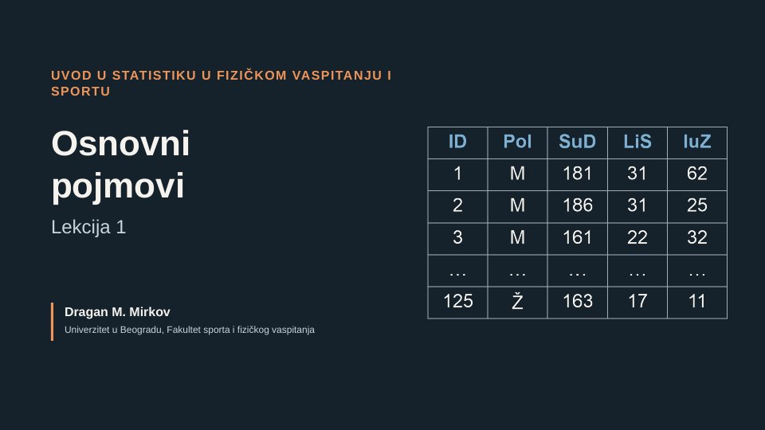
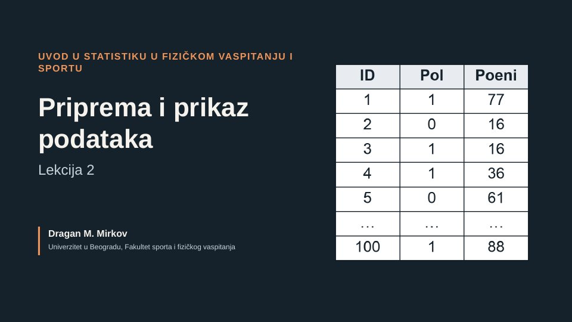
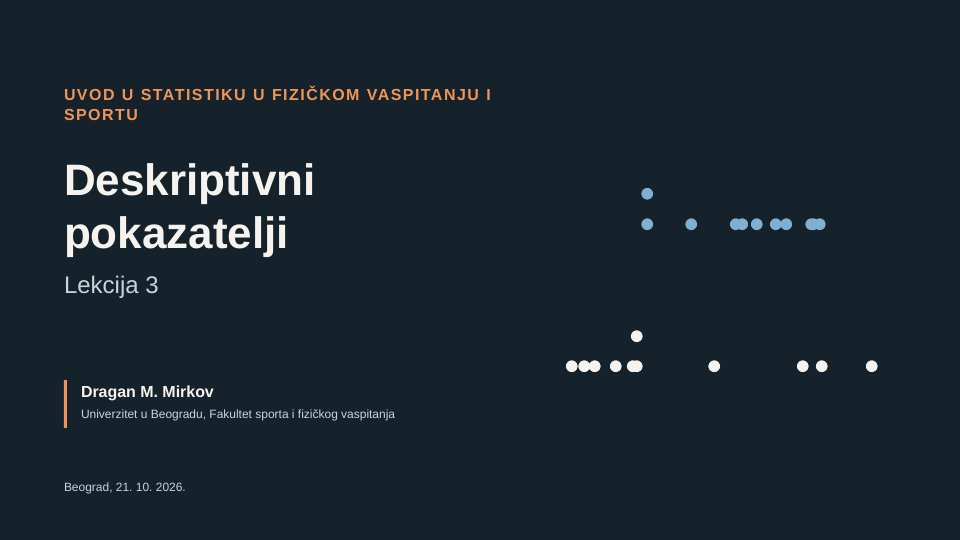

Integrisane akademske studije; isti sadržaj je deo predmeta Metodologija istraživanja u fizičkom vaspitanju i sportu na master akademskim studijama
Uvod u statistiku u fizičkom vaspitanju i sportu
Kako se rezultati merenja i testiranja u fizičkom vaspitanju i sportu organizuju, opisuju i tumače: od matrice podataka do deskriptivnih pokazatelja, korelacije i statističkih testova.
Lekcije
video predavanjematerijal iz 2025uskoro
- Lekcija 1Osnovni pojmoviVideo 13:09 · prezentacija

- Lekcija 2Priprema i prikazivanje podatakaVideo 14:57 · prezentacija · vežba · domaći

- Lekcija 3Deskriptivni pokazateljiVideo 20:03 · prezentacija · vežba · domaći

- Lekcija 4StandardizacijaMaterijal iz 2025, u izradi
- Lekcija 5KorelacijaMaterijal iz 2025, u izradi
- Lekcija 6RegresijaMaterijal iz 2025, u izradi
- Lekcija 7t-testMaterijal iz 2025, u izradi
- Lekcija 8Analiza varijanse (ANOVA)
- Lekcija 9Hi-kvadrat test
- Lekcija 10Neparametrijski testovi